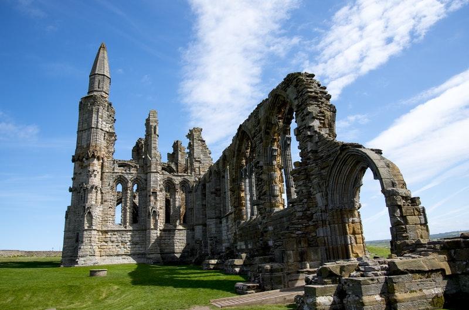

Sejarah

Asal nama Jepara berasal dari perkataan Ujung Para, Ujung Mara dan Jumpara yang kemudian menjadi Jepara, yang berarti sebuah tempat permukiman para pedagang yang berniaga ke berbagai daerah. Menurut buku “Sejarah Baru Dinasti Tang (618-906 M)” mencatat
bahwa pada tahun 674 M seorang musafir Tionghoa bernama I-Tsing pernah mengunjungi negeri Holing atau Kaling atau Kalingga yang juga disebut Jawa atau Japa dan diyakini berlokasi di Keling, kawasan timur Jepara sekarang ini, serta
dipimpin oleh seorang raja wanita bernama Ratu Shima yang dikenal sangat tegas.
Menurut seorang penulis Portugis bernama Tomé Pires dalam bukunya “Suma Oriental”, Jepara baru dikenal pada abad ke-XV (1470 M) sebagai bandar perdagangan yang kecil yang baru dihuni oleh 90-100 orang dan dipimpin
oleh Aryo Timur dan berada di bawah pemerintahan Demak. Kemudian Aryo Timur digantikan oleh putranya yang bernama
Pati Unus (1507-1521). Pati Unus mencoba untuk membangun Jepara menjadi kota niaga.
Geografis

Secara geografis Kabupaten Jepara terletak pada posisi 110°9'48,02" sampai 110°58'37,40" Bujur Timur dan 5°43'20,67" sampai 6°47'25,83" Lintang Selatan, sehingga merupakan daerah paling ujung sebelah utara dari Provinsi Jawa Tengah. Kabupaten Jepara terletak
di Pantura Timur Jawa Tengah yang bagian barat dan utaranya dibatasi oleh laut. Bagian timur wilayah kabupaten ini merupakan daerah pegunungan. Luas wilayah daratan Kabupaten Jepara 1.004,132 km2 dengan panjang garis pantai 72 km.
Wilayah tersempit adalah Kecamatan Kalinyamatan (24,179 km²) sedangkan wilayah terluas adalah Kecamatan Keling (231,758 km²).
Wilayah Kabupaten Jepara juga meliputi Kepulauan Karimunjawa, yakni gugusan pulau-pulau di Laut Jawa. Dua pulau terbesarnya adalah Pulau Karimunjawa dan Pulau Kemujan. Sebagian besar wilayah Karimunjawa dilindungi dalam Cagar Alam Laut Karimunjawa. Penyeberangan
ke kepulauan ini dilayani oleh kapal ferry yang bertolak dari Pelabuhan Jepara. Karimunjawa juga terdapat
Bandara Dewandaru yang didarati pesawat dari Bandara Ahmad Yani Semarang.
Wisata
Gunung Genuk dikenal juga dengan nama Gunung Donorojo disebut juga dengan nama Gunung Clering adalah sebuah gunung yang terletak di ujung utara Pulau Jawa atau tepatnya di Semenanjung Gunung Muria, Jawa Tengah menunjukkan banyak
fenomena yang tentunya perlu pengkajian secara komprehensif. Artinya permasalahan yang ada atau singkatnya dari kajian dari kacamata ilmu gunung api harus dibuktikan juga dengan ilmu-ilmu alam lainnya.
Pantai Kartini

Pantai Kartini adalah objek wisata pantai di Bulu, Jepara, Jawa Tengah. Pantai ini terletak 2,5 km arah barat dari pendopo Kantor Bupati Jepara. Kawasan dengan luas lahan 3,5 ha ini merupakan kawasan yang strategis, karena sebagai jalur transportasi laut
menuju objek wisata Taman laut Nasional Karimunjawa dan Pulau Panjang.
Gua Tratak

Gua Tratak merupakan gua yang indah, tempat di sekitar daerah tersebut masih berbentuk hutan lindung yang memiliki keindahan alami serta begitu eksotis untuk dikagumi keindahannya. Gua ini tentunya memiliki jurukunci untuk merawatnya, jurukunci Gua Tratak
bernama Pak Murnoto. Menurut warga setempat, Gua Tratak adalah gua yang digunakan untuk para warga desa yang beragama Hindu dalam upacara keagamaan Setiap hari jumat pon (tanggal Jawa). Serat Gua Tratak memiliki mitos, tidak boleh
seorang wanita mendatangi gua tersebut.